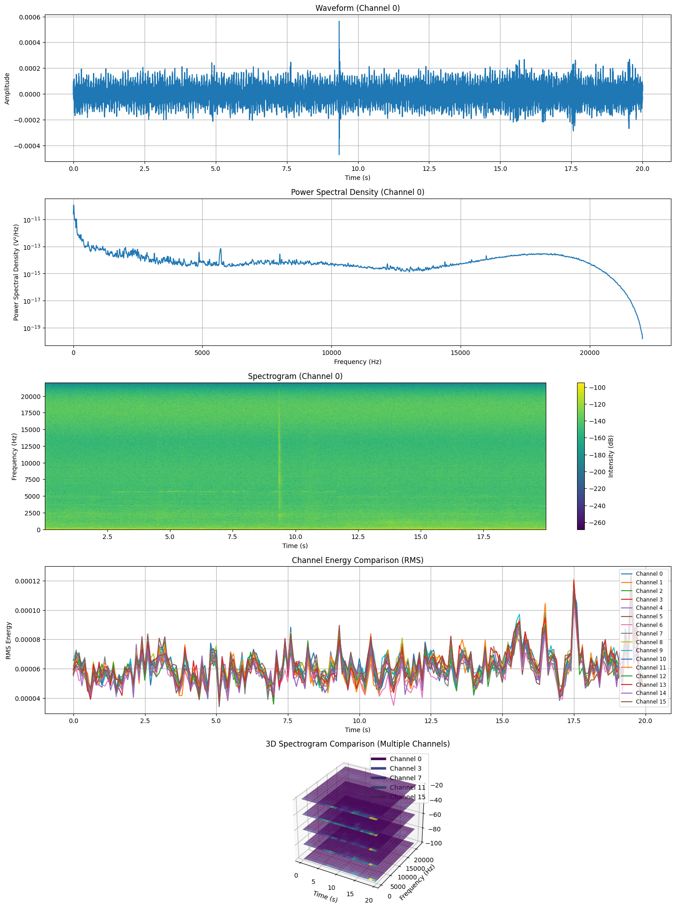

import json
from pathlib import Path
import numpy as np
import matplotlib.pyplot as plt
from scipy.signal import welch, spectrogram
from scipy import signal
import pandas as pd
import librosa
import librosa.display
# Configuration
cfg = {
'metadata_local_path_str': '/home/grace/Develop/ziz/2025-04-21_19-08-01_Session1_MJ_Brown Building Apartments_Sunny/metadata.json'
}
if __name__ == '__main__':
# Open and read the metadata file
metadata_json = Path(cfg['metadata_local_path_str'])
local_path = metadata_json.parent
with metadata_json.open('r') as f:
metadata = json.load(f)
# Collect audio chunk paths
audio_chunks_over_time = []
for audio_metadata in metadata['audio_chunks_timestamps']:
orig_path = Path(audio_metadata['file_name'])
last_two = orig_path.parts[-2:]
audio_path = local_path.joinpath(*last_two)
audio_chunks_over_time.append(audio_path)
# Load the first audio chunk
idx = 0
audio_data_np = np.load(audio_chunks_over_time[idx]) # shape: (n_samples, n_channels)
expected_sample_rate = int(metadata['sound_card_sample_rate'])
print(f'Sample rate: {expected_sample_rate} Hz')
print(f'Audio data shape: {audio_data_np.shape}')
# Use first 20 seconds (according to chunk size in metadata)
duration_seconds = metadata['chunk_size_in_seconds']
num_samples = min(int(expected_sample_rate * duration_seconds), audio_data_np.shape[0])
print(f'Analyzing {duration_seconds} seconds ({num_samples} samples)')
# Create a figure with multiple subplots
plt.figure(figsize=(15, 20))
# ===== PLOT 1: Waveform of first channel =====
plt.subplot(5, 1, 1)
time = np.arange(num_samples) / expected_sample_rate
channel = 0 # First channel
plt.plot(time, audio_data_np[:num_samples, channel])
plt.title(f'Waveform (Channel {channel})')
plt.xlabel('Time (s)')
plt.ylabel('Amplitude')
plt.grid(True)
# ===== PLOT 2: Power Spectral Density =====
plt.subplot(5, 1, 2)
freqs, power = welch(audio_data_np[:num_samples, channel], fs=expected_sample_rate, nperseg=4096)
plt.semilogy(freqs, power)
plt.title(f'Power Spectral Density (Channel {channel})')
plt.xlabel('Frequency (Hz)')
plt.ylabel('Power Spectral Density (V²/Hz)')
plt.grid(True)
# ===== PLOT 3: Spectrogram =====
plt.subplot(5, 1, 3)
f, t, Sxx = spectrogram(audio_data_np[:num_samples, channel], fs=expected_sample_rate, nperseg=1024)
plt.pcolormesh(t, f, 10 * np.log10(Sxx), shading='gouraud')
plt.title(f'Spectrogram (Channel {channel})')
plt.xlabel('Time (s)')
plt.ylabel('Frequency (Hz)')
plt.colorbar(label='Intensity (dB)')
# ===== PLOT 4: Channel Comparison (RMS Energy) =====
plt.subplot(5, 1, 4)
# Calculate RMS energy for each channel
n_channels = min(16, audio_data_np.shape[1]) # Use up to 16 channels
channel_energies = []
for ch in range(n_channels):
# Calculate RMS energy in 100ms windows
window_size = int(expected_sample_rate * 0.1)
n_windows = num_samples // window_size
energy = []
for i in range(n_windows):
start = i * window_size
end = (i + 1) * window_size
segment = audio_data_np[start:end, ch]
rms = np.sqrt(np.mean(np.square(segment)))
energy.append(rms)
channel_energies.append(energy)
# Create time axis for energy plot
energy_time = np.arange(len(channel_energies[0])) * 0.1 # 100ms windows
# Plot energies for each channel
for ch in range(n_channels):
plt.plot(energy_time, channel_energies[ch], label=f'Channel {ch}')
plt.title('Channel Energy Comparison (RMS)')
plt.xlabel('Time (s)')
plt.ylabel('RMS Energy')
plt.legend(loc='upper right', fontsize='small')
plt.grid(True)
# ===== PLOT 5: 3D Visualization (Multiple channels over time and frequency) =====
plt.subplot(5, 1, 5, projection='3d')
# Select a subset of channels for clarity
channels_to_plot = min(5, n_channels)
channel_indices = np.linspace(0, n_channels-1, channels_to_plot, dtype=int)
for i, ch in enumerate(channel_indices):
# Calculate spectrogram
f, t, Sxx = spectrogram(audio_data_np[:num_samples, ch], fs=expected_sample_rate, nperseg=1024)
# Downsample for visualization
freq_step = max(1, len(f) // 50)
time_step = max(1, len(t) // 50)
f_downsample = f[::freq_step]
t_downsample = t[::time_step]
Sxx_downsample = Sxx[::freq_step, ::time_step]
# Convert to dB for better visualization
Sxx_db = 10 * np.log10(Sxx_downsample + 1e-10)
# Create meshgrid for 3D plot
T, F = np.meshgrid(t_downsample, f_downsample)
# Plot as surface with offset based on channel number
offset = i * 20 # Offset each channel for visibility
ax = plt.gca()
surf = ax.plot_surface(T, F, Sxx_db + offset, cmap='viridis', alpha=0.7)
plt.title('3D Spectrogram Comparison (Multiple Channels)')
plt.xlabel('Time (s)')
plt.ylabel('Frequency (Hz)')
# Add custom legend for channels
from matplotlib.lines import Line2D
legend_elements = []
for i, ch in enumerate(channel_indices):
legend_elements.append(Line2D([0], [0], color=plt.cm.viridis(i/channels_to_plot), lw=4, label=f'Channel {ch}'))
ax.legend(handles=legend_elements, loc='upper right')
plt.tight_layout()
plt.savefig('audio_visualization.png', dpi=300)
plt.show()Sample rate: 44100 Hz
Audio data shape: (882000, 16)
Analyzing 20 seconds (882000 samples)